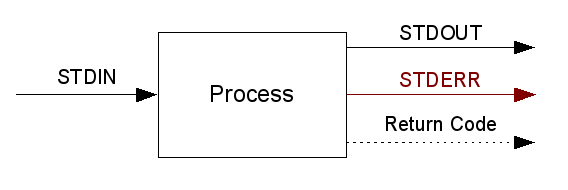

Let’s talk about processes from a shell point of view.
A process takes standard input (STDIN) and returns
Of course there are processes that
But every process returns a return code.
There are environment variables too.
In the next sections I’ll show you how to use that knowledge with Bash and Python.
I could not do better than the Advanced Bash Scripting Guide, so I will simply present a basic example. Just paste it line by line into your running shell.
#!/bin/bash
# environment variables
# =====================
var="hello world"
# STDIN, STDOUT
# =============
# echo takes a string and puts it on STDOUT
echo $var
# we can redirect STDIN to a file
echo $var 1> /tmp/some_file
# cat takes a file as first argument and writes it to STDOUT
cat /tmp/some_file
# to be brutally honest cat concatenates files and writes them to STDOUT
echo "part 2" > /tmp/some_other_file
cat /tmp/some_file /tmp/some_other_file
# cat can also take STDIN and write it to STDOUT
echo $var | cat
# to concatenate STDIN with a file:
echo $var | cat - /tmp/some_other_file
# STDERR
# ======
# let's redirect STDIN to STDERR
echo $var 1>&2
# we can read it, but if we redirect STDOUT to a file it remains empty
write_stuff_to_STDERR() { # this is a function -- see ``man bash``
echo "stuff" 1>&2
}
write_stuff_to_STDERR 1> /tmp/where_is_my_message
cat /tmp/where_is_my_message
# so to get to the message we redirect STDERR to a file
write_stuff_to_STDERR 2> /tmp/there_it_is
cat /tmp/there_it_is
# we can also redirect everything to a file
# that's basically everything you can read on your console
write_stuff() {
echo "INFO" 2>&1 # to STDOUT
echo "ERROR" 1>&2 # to STDERR
}
write_stuff > /tmp/everything
write_stuff 1> /tmp/just_stdout
write_stuff 2> /tmp/just_stderr
cat /tmp/everything
cat /tmp/just_stdout
cat /tmp/just_stderr
# if the output of a process is irrelevant
# we redirect to /dev/null (the bottomless bucket)
write_stuff 1> /dev/null # don't care about your info
write_stuff 2> /dev/null # don't care about your errors
# Return Codes
# ============
# on success processes return a 0
echo '' # this will definitely succeed
echo $?
# else they return something > 0
# good tools document this in their man pages
this_command_will_probably_not_be_found 2> /dev/null
echo $?
# return codes are useful for chaining processes
this_command_will_probably_not_be_found 2> /dev/null && echo 'success'
echo 'I work!' && echo 'success'
We know how to write stuff to STDIN and STDERR, how to set a return code and how to read STDOUT, STDERR and return codes. Let’s do that in Python!
Here is a process that can do all that:
#!/usr/bin/python
"""
Example about basic process manipulation
"""
import os
import sys
def read_stdin():
res = 'Your STDIN contains: '
for line in sys.stdin:
res = res + line
print res
def write_to_stdout():
print "Writing to STDOUT is easy."
sys.stdout.write('One way or another...\n')
def write_to_stderr():
sys.stderr.write('Writing to STDERR is easy too.\n')
def return_code():
sys.exit(8)
if __name__ == '__main__':
read_stdin()
write_to_stdout()
write_to_stderr()
return_code()
Use it like this:
echo 'spam' | ./processes.py
echo $?
But how do we communicate with other processes, i.e. be the one controlling others? Here’s an example:
#!/usr/bin/python
"""
Example about process communication
"""
import os
import sys
from subprocess import call, Popen, PIPE
def get_return_code():
cmd = ['echo', '""']
retcode = call(cmd)
print
print 'get_return_code'
print '==============='
print retcode
def get_stdout():
cmd = ['ls', '.']
p = Popen(cmd, stdout=PIPE)
res = p.communicate()[0]
print
print 'get_stdout'
print '=========='
print res
def run_in_shell():
cmd = "echo 'Shell makes life easy, but is not too powerful.' | cat -"
p = Popen(cmd, shell=True, stdout=PIPE)
res = p.communicate()[0]
print
print 'run_in_shell'
print '============'
print res
def get_stderr():
cmd = ['cat', 'some_filename_that_cannot_be_found']
p = Popen(cmd, stderr=PIPE)
res = p.communicate()[1]
print
print 'get_stderr'
print '=========='
print res
def get_everything():
cmd = "echo 'first part works' | cat - but_this_file_cannot_be_found"
p = Popen(cmd, shell=True, stdout=PIPE, stderr=PIPE)
out, err = p.communicate()
retcode = p.returncode
print
print 'get_stdout_and_stderr'
print '============'
print 'STDOUT: %s'%out
print 'STDERR: %s'%err
print 'returncode: %s'%retcode
if __name__ == '__main__':
get_return_code()
get_stdout()
run_in_shell()
get_stderr()
get_everything()
You can find more information in the official Python Documentation.